第一章 仿真方法和工具链
核心求解器由自主 C++17 代码实现，PETSc 提供线性代数与 KSP 求解，MPI 提供并行计算。Python 负责配置、调度、后处理、绘图和证据管理。COMSOL 后续仅作为复杂电极几何与静电场交叉验证工具。
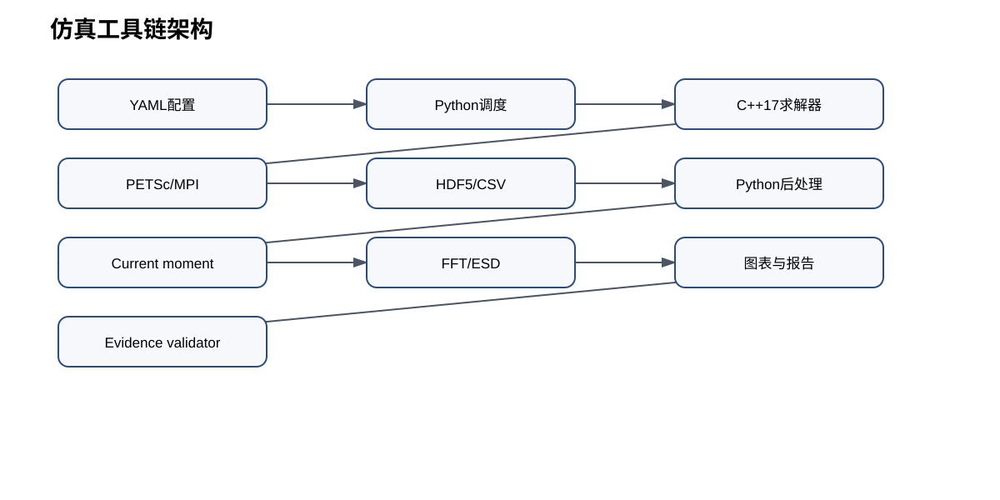
run_id: DOCUMENTATION；source: docs/stage5_closure_report.md
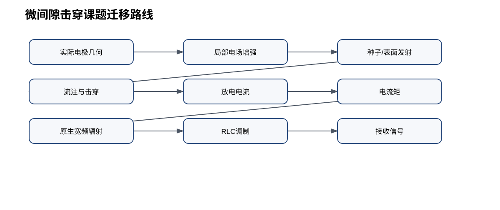
run_id: DOCUMENTATION；source: docs/project_simulation_transfer.md
第二章 文献复刻过程
Stage 1 重建参数、公式和频谱链；Stage 2 验证 ISG-0、Poisson OpenCharge 和 SP3；Stage 3 验证三粒子单流注求解器；Stage 4 跑通碰撞、isolated subtraction、电流矩和辐射链；Stage 5 做趋势逻辑和课题迁移。
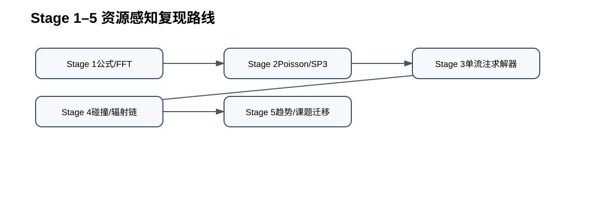
run_id: DOCUMENTATION；source: docs/stage5_closure_report.md
第三章 单流注与光电离
Stage 3 资源感知结果表明，单 Gaussian 种子可形成双向流注，SP3 关闭后正头传播不能维持同等响应。
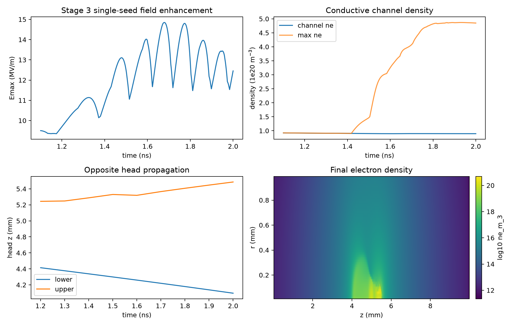
run_id: S3-COARSE_ML_RECOVERY_RESUME1；source: results/stage3/single_seed/coarse_ml_recovery_resume1/
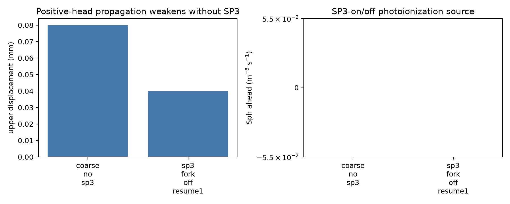
run_id: S3-COARSE_NO_SP3; S3-SP3_FORK_OFF_RESUME1；source: results/stage3/sensitivity/photoionization_sensitivity.csv
第四章 双流注碰撞
Stage 4 基准 S4-PAPERLIKE-20UM 的碰撞时间为 1.954 ns，桥接密度增长 188.56 倍，碰撞区电场下降 66.18%。
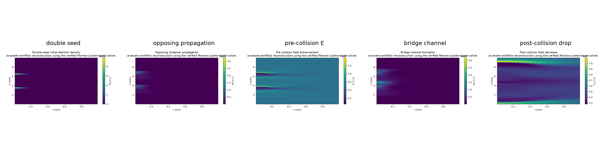
run_id: S4-PAPERLIKE-20UM；source: results/stage4/figures/
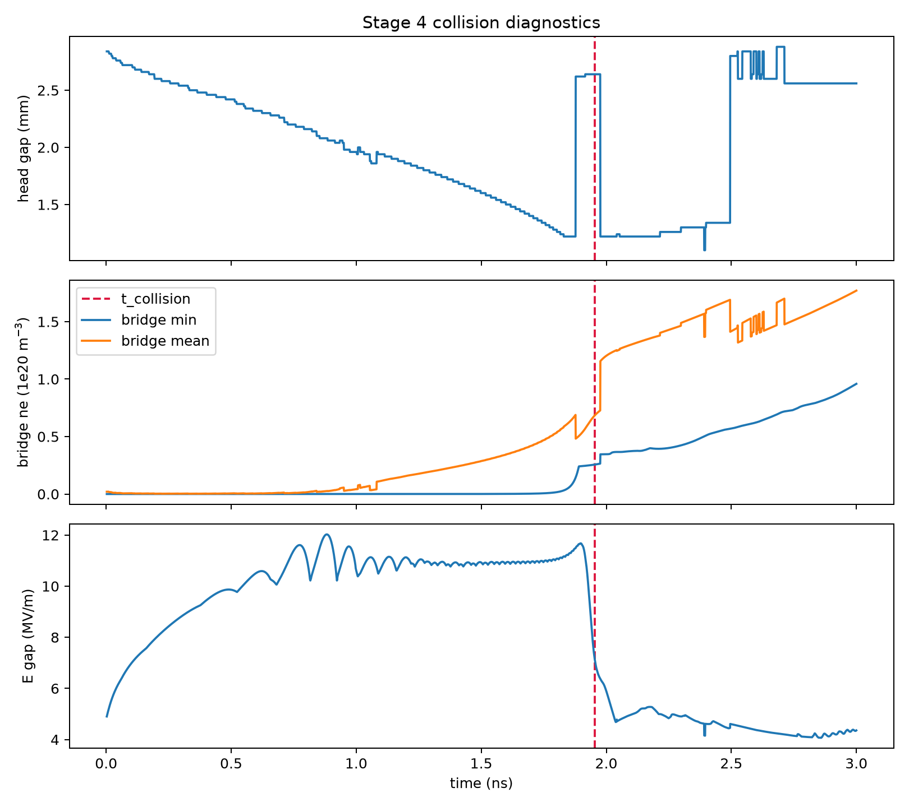
run_id: S4-PAPERLIKE-20UM；source: results/stage4/collision/collision_event.csv
第五章 电流矩与辐射后处理
主电流矩采用电子漂移电流积分，扩散电流作为敏感性。isolated subtraction 得到碰撞附加电流矩，Stage 4 Delta I 峰值为 4.471e-04 A m，SNR 为 209.78。
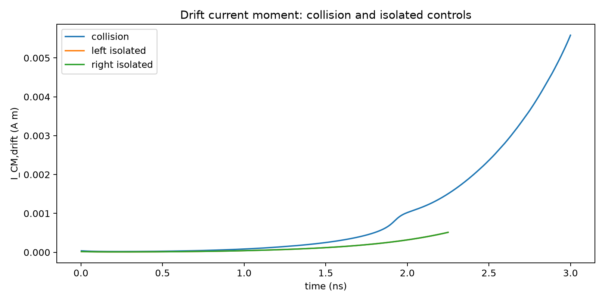
run_id: S4-PAPERLIKE-20UM；source: results/stage4/current_moment/
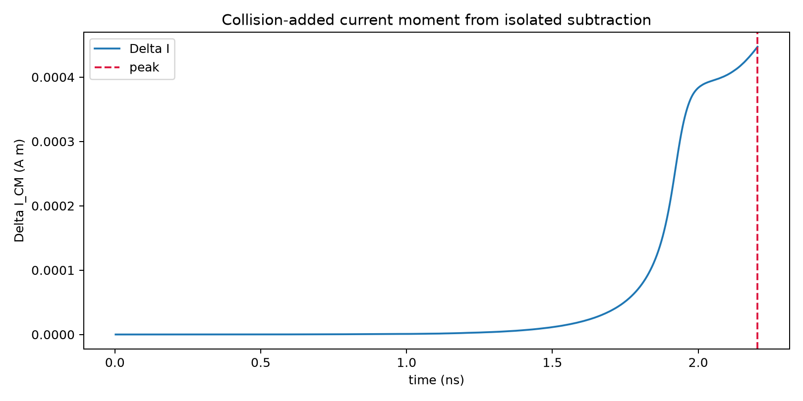
run_id: S4-PAPERLIKE-20UM；source: results/stage4/current_moment/delta_current_moment.csv
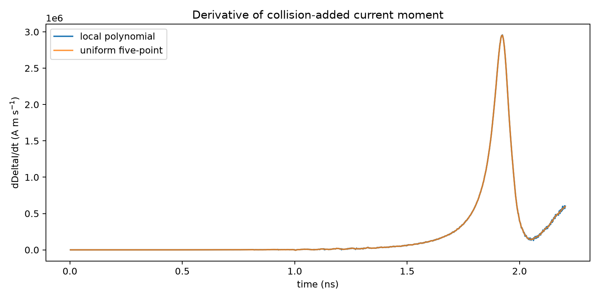
run_id: S4-PAPERLIKE-20UM；source: results/stage4/radiation/delta_current_derivative.csv
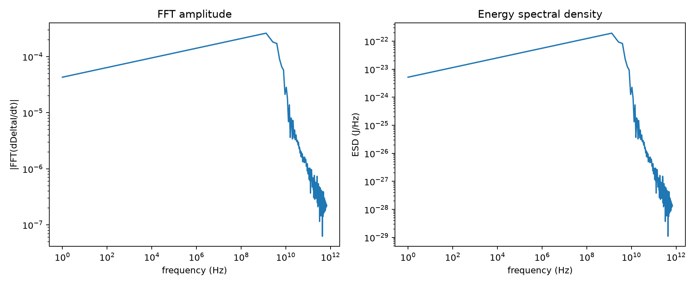
run_id: S4-PAPERLIKE-20UM；source: results/stage4/radiation/
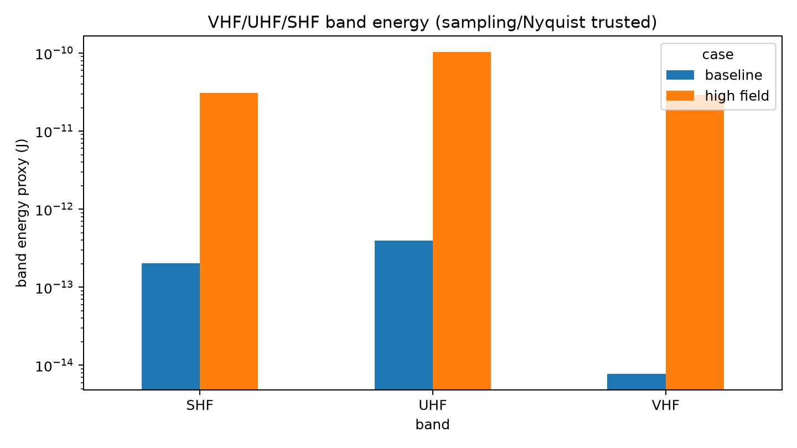
run_id: S4-PAPERLIKE-20UM; S5-HIGHFIELD-COLLISION；source: results/stage4/radiation/band_energy.csv; results/stage5/radiation/highfield_band_energy.csv
第六章 Stage 5趋势
高背景场工况 S5-HIGHFIELD-COLLISION 的碰撞时间为 1.000 ns，Delta I 峰值为 6.620e-03 A m，谱质心约 2.039 GHz。长间距工况状态为 NO_COLLISION_WITHIN_RESOURCE_WINDOW；不对称种子工况状态为 NO_COLLISION_WITHIN_RESOURCE_WINDOW，速度比诊断约 0.195。
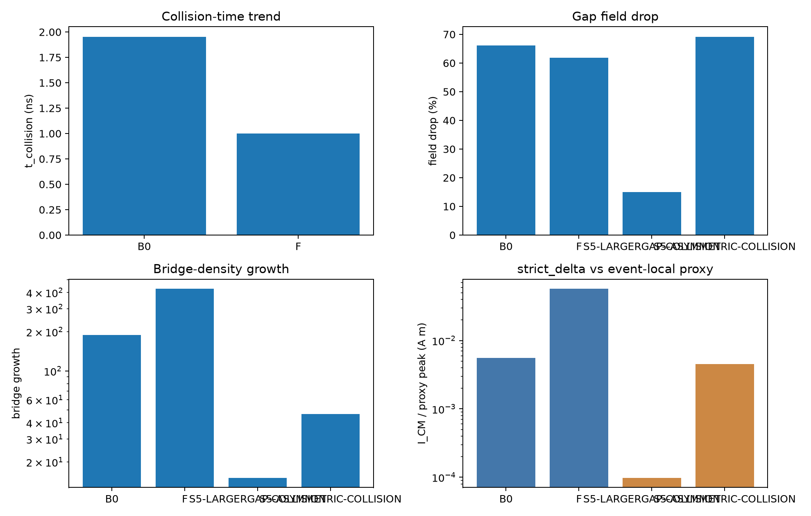
run_id: S5-HIGHFIELD-COLLISION; S5-LARGERGAP-COLLISION; S5-ASYMMETRIC-COLLISION；source: results/stage5/trends/case_comparison.csv
第七章 面向博士课题的迁移
可复用模块包括 PETSc/MPI 框架、网格与场数据结构、Poisson、SP3、ISG-0、时间推进、checkpoint、电流矩积分、FFT/ESD 和证据审计。必须替换的部分包括自由空间 Gaussian 种子、均匀背景场、Morrow–Lowke 输运、无电极边界、固定空气气氛和无外部电路耦合。
run_id: DOCUMENTATION；source: docs/project_simulation_transfer.md
第八章 结论与限制
项目已经完成仿真模型和流程主要复刻，跑通自主 C++/PETSc/MPI 求解工具链，并完成碰撞、电流矩、FFT 和 ESD 处理，可支撑课题仿真开发。